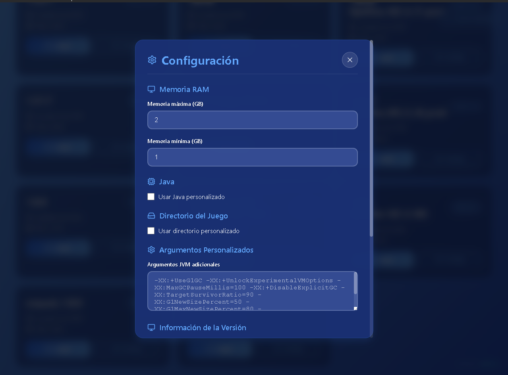
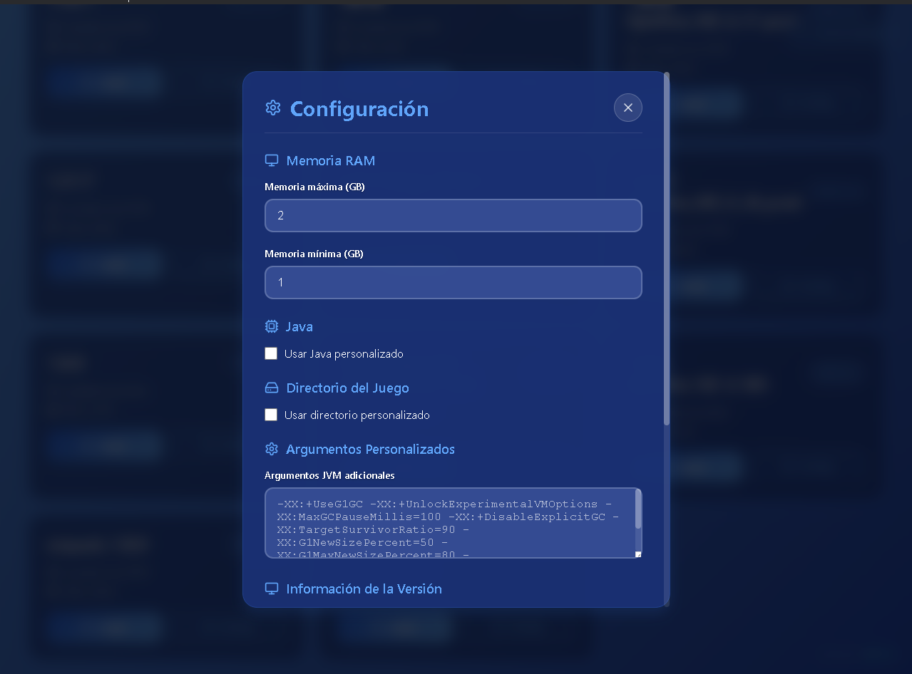

JugeLauncher
Características

Interfaz moderna
Diseño visual limpio y adaptado a la estética gamer.
Multi-versiones
Compatible con Minecraft desde la 1.7 hasta la última versión.

Rendimiento optimizado
Corre más rápido que launchers tradicionales gracias a su núcleo liviano.
Versiones disponibles
�� JugeLauncher 3.0 BETA
NUEVA VERSIÓNEstado: ✅ FUNCIONAL Y LISTO PARA USO
Tamaño: 73MB (Instalador) / 156MB (Aplicación)
Compatibilidad: Windows 10/11
Dependencias: 373 paquetes npm
üéÆ Caracter√≠sticas Principales:
- ✅ Gestión automática de versiones (Vanilla, Forge, OptiFine)
- ✅ Descarga automática de Java embebido (8, 11, 17)
- ✅ Gestión inteligente de librerías y natives
- ✅ Lanzamiento optimizado con configuración de memoria
- ✅ Autenticación offline funcional
- ✅ Interfaz moderna con logs en tiempo real
Descargar Windows (.exe)
Versión 3.0.0 BETA - Última actualización
Otras plataformas:
- üîπ MacOS (.dmg) - Pr√≥ximamente
- üîπ Linux (.AppImage) - Pr√≥ximamente
Capturas


 

Launcher Patch Notes
Version Log: 3.0.0 // Status: OPERATIONAL
Funcionalidades Implementadas
- ✅ Gestión de Versiones
- Detección automática
- Soporte de herencia
- Validación de JSON
- ✅ Sistema de Java
- Descarga automática JRE
- Soporte multi-versión
- Configuración de rutas
- ✅ Gestión de Librerías
- Descarga de dependencias
- Manejo especial LWJGL
- Extracción de natives
- ✅ Lanzamiento de Minecraft
- Construcción de classpath
- Procesamiento de args
- Optimización de memoria
- ✅ Interfaz y Autenticación
- Login, gestor de versiones y logs.
- Modo offline y perfiles personalizables.
Estado y Hoja de Ruta
- Estado: ✅ FUNCIONAL Y LISTO
- üîÑ En Desarrollo
- Autenticación Microsoft (código listo)
- Gestión de perfiles (básico implementado)
- üéØ Pr√≥ximas Mejoras
- Gestión de mods
- Backups de configuración
- Actualizaciones automáticas (OTA)
- Soporte Multiplataforma (macOS/Linux)
Estadísticas y Datos Técnicos
- üìä Estad√≠sticas
- Versión: 3.0.0
- Líneas de código: ~2,000+
- Instalador: 73MB
- Aplicación: 156MB
- Dependencias: 373 paquetes npm
- Compatibilidad: Windows 10/11
- üéÆ Caracter√≠sticas T√©cnicas
- Soporte: Vanilla, Forge, OptiFine
- Optimización: Heap, Natives, Classpath
- Seguridad: Context Isolation
- Estabilidad: Error handling & File validation
Versiones anteriores ▼
Síguenos
Soporte
¿Tienes problemas o dudas? Únete a nuestro Discord o consulta la documentación oficial.
Reportar Bug
¿Encontraste un error en JugeLauncher? ¡Ayúdanos a mejorarlo!